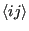
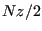
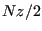
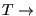
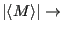
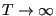
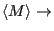
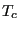

In the introductory lecture, I introduced state-counting using a simple, one-dimensional Ising system. To be precise, this was a particular case known as an Ising magnet of noninteracting spins, because each spin made its own independent contribution to the Hamiltonian. The state of the magnet is specified by specifying each spin variable as either +1 or -1:
Now, we will consider a more interesting Ising system; namely, that of interacting spins on a 2d square lattice. What do we mean by interacting? We mean that the Hamiltonian depends on pairs of spins:
where the notation
 denotes that we are summing over unique pairs of nearest neighbors, and, as before a spin  is either +1 or -1.
is either +1 or -1.  is the “coupling constant” and represents our default unit of energy. How many unique pairs of nearest neighbors are there on a lattice of
is the “coupling constant” and represents our default unit of energy. How many unique pairs of nearest neighbors are there on a lattice of  spins (assuming periodic boundary conditions)? To answer this question, we must know the coordination,
spins (assuming periodic boundary conditions)? To answer this question, we must know the coordination,  , of the lattice; that is, how many nearest neighbors does one lattice position have? For a square lattice, = 4. Each spin therefore contributes two unique spin pairs to the system, so there are  unique nearest neighbor pairs.
, of the lattice; that is, how many nearest neighbors does one lattice position have? For a square lattice, = 4. Each spin therefore contributes two unique spin pairs to the system, so there are  unique nearest neighbor pairs.
Think about this Hamiltonian. It says that energy is minimal when all spins have the same alignment, either all up or all down. Imagine a microscopic observable called the magnetization, or average spin orientation,  :
:
Then, = +1 and -1 are two energetically equivalent microstates. We can then expect that if there is any thermal energy in the system which randomly flips spins, the amount of this thermal energy (that is, the temerature) will somehow control the observable magnetization. We “observe” magnetization using an ensemble
average:
Our physical intuition tells us that as
 0,
 1, and as
,
 0. The fascinating thing about an Ising magnet is that there is a finite temperature called the critical temperature, . If we start out with a “hot” system, and cool it to just below , the absolute value of the magnetization spontaneously jumps from 0 to some finite value. In other words, the system undergoes a phase transition from a disordered phase to a partially ordered phase. A Metropolis Monte Carlo simulation can allow us to probe the behavior of an Ising system and learn how the system behaves near criticality. The rest of this case study will be devoted to showing you the inner workings of a C program which simulates the Ising magnet using Metropolis MC, as a first implementation of this technique. In the suggested exercises appearing at the end of this case study, you will modify this code slightly to compute averages values of certain observables.
But first, I recommend you check out this Java implementation of a Monte Carlo simulation of a 2-dimensional Ising magnet (one of many on the web; google “ising simulation” and you'll get a nice sample.) This is a fun little Java applet that lets you play with an Ising magnet. You can change the temperature of the simulation: making it cold will “freeze” the system, and making it hot “melts” it. Near the critical temperature, , relatively large regions of mostly-up spins compete with regions of mostly down spin. In one of the exercises, we'll learn how to measure an observable called the correlation length, which characterizes the size of these domains and is a useful signature of criticality.
cfa22@drexel.edu